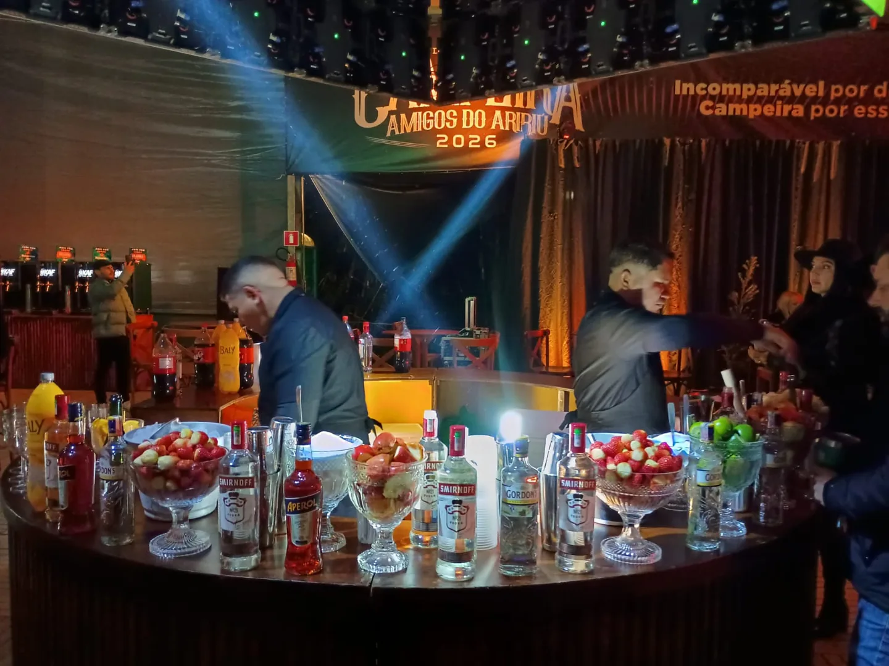

O bar vai
até a sua festa.
Do encontro em casa ao evento no salão, o Witt Bar monta o balcão no local e prepara os drinks para seus convidados.

O Witt em diferentes festas.
Toque nas fotos para ampliar.
Ver mais fotos de eventos
Ver fotos do Instagram do Witt
Tem festa
nos planos?
Chama Wit bar
Conte um pouquinho do que você está imaginando. Vamos transformar essa ideia em uma proposta para o seu evento.
01 Você conta a ideia.
02 A gente combina os detalhes.
03 O brinde acontece.
Vamos planejar seu evento
Seu pedido fica pronto para o WhatsApp.
Pronto para o primeiro brinde?
Confira seu pedido e continue a conversa pelo WhatsApp.
Abrir conversa no WhatsAppSó mais
um detalhe.
O Witt Bar atende na minha casa?+
Sim! A proposta é levar o atendimento de bar até a sua festa, inclusive em casa. Informe a cidade, o bairro e como é o espaço para consultar o deslocamento e o formato mais adequado.
Tem drinks sem álcool?+
Sim. O cardápio enviado pelo Witt Bar inclui Tropical, Morango e Abacaxi com hortelã sem álcool. Você pode incluí-los no seu pedido e combinar a seleção com a equipe.
O que está incluído no serviço?+
O formato do bar, as bebidas, os materiais, a duração e a estrutura são definidos na proposta. Conte sobre o seu evento para receber um orçamento com os itens detalhados.
O envio do pedido já reserva minha data?+
O formulário prepara uma mensagem para o WhatsApp. A reserva acontece depois da conversa e da confirmação da disponibilidade e das condições com a equipe.